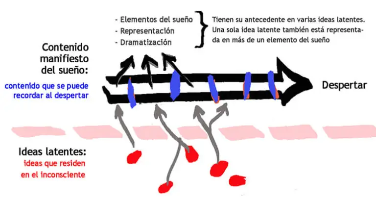

El sueño es la realización de un deseo inconsciente, que se realiza durante el sueño, no en lo real.
Es la realización no enmascarada (disfrazada) de un deseo no reprimido.
Es aquel ante el cuál la persona se despierta y no puede seguir soñando. Sería la realización no enmascarada de un deseo reprimido, por lo que uno sueña con algo que le genera malestar de forma directa, sin que haya sido transformado o disfrazado, por lo que uno se despierta.
Se diferencia de la pesadilla en que a pesar de que produce angustia puedes seguir durmiendo ya que es un sueño deformado; eso que genera angustia está disfrazado o simbolizado a través de otras figuras, lo que puede generar malestar pero no el suficiente para despertarse. El sueño deformado no se crearía si no hay un deseo reprimido.
Los sueños lúcidos son sueños en los que eres consciente de que estás experimentando un sueño y de las posibilidades que tienes mientras estás soñando. Tener un sueño lúcido es conseguir que durante el sueño te des cuenta que estás soñando. Y, a partir de ahí, comiences a tomar decisiones más conscientes y menos automáticas.
Se tratarían de tres pasos que llevan a cabo la gestación del sueño (desplazamiento, condensación y figurabilidad) y un último paso que es cuando se narra el sueño una vez despierto, eso sí, es importante tener en cuenta que todos ellos se producirían a la vez.
Es un modo de funcionamiento del inconsciente y es utilizada por el aparato psíquico para poder enmascarar un deseo inconsciente, de tal forma que pueda traspasar la censura y realizarse dicho deseo en el sueño.
Es la función defensiva que ayuda a enmascarar lo inconsciente y que así pueda traspasar la censura. El desplazamiento tiene preferencia por lo infantil, lo insignificante y lo sexual. De esta manera, algún elemento del sueño que podría parecer en la vida real de dicho individuo como insignificante, adquiere un valor en el sueño de una intensidad que es vivida como extraña por su relevancia.
Lo que se ha descubierto a través de estos estudios del sueño y el funcionamiento del aparato psíquico es que soñamos en imágenes visuales. Todos los pensamientos e ideas tienen que transmutarse en imágenes visuales para poder ser soñadas, por lo que este paso implica la posibilidad de seleccionar las imágenes adecuadas para poder crear el sueño.
Teniendo en cuenta todo el trabajo del sueño que realiza el aparato psíquico para poder dormir, para poder soñar y, por tanto, para poder realizar un deseo inconsciente, el hecho de que se olvide un sueño podría tener que ver con que no se hayan enmascarado completamente los aspectos inconscientes del sueño y la censura lo haya reprimido.